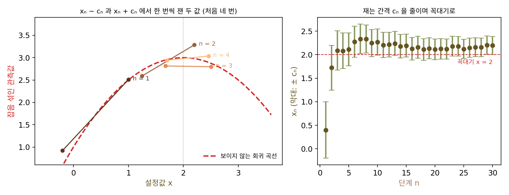
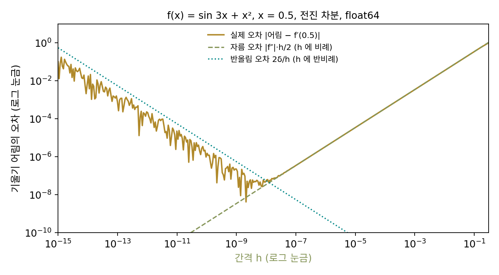
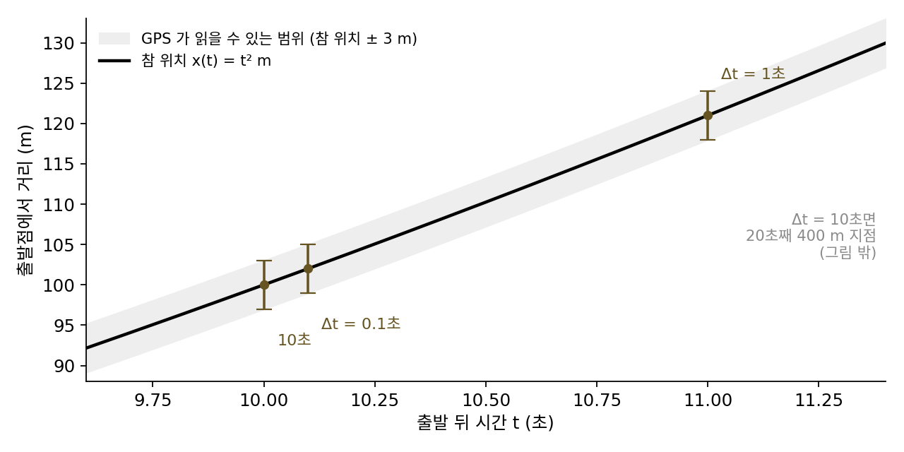
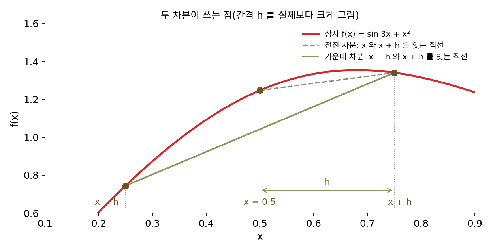
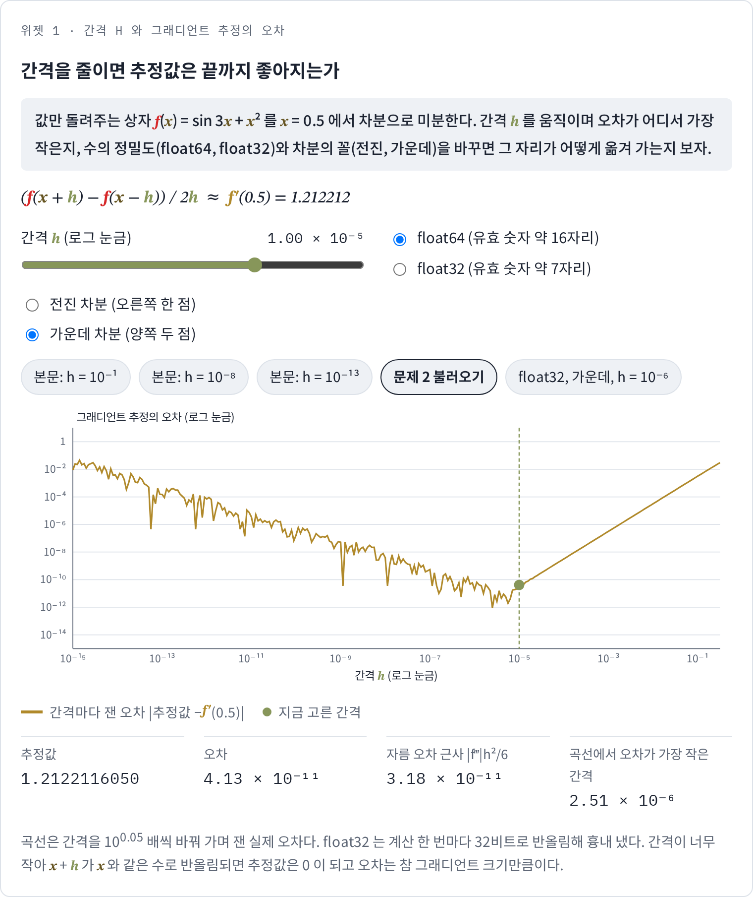
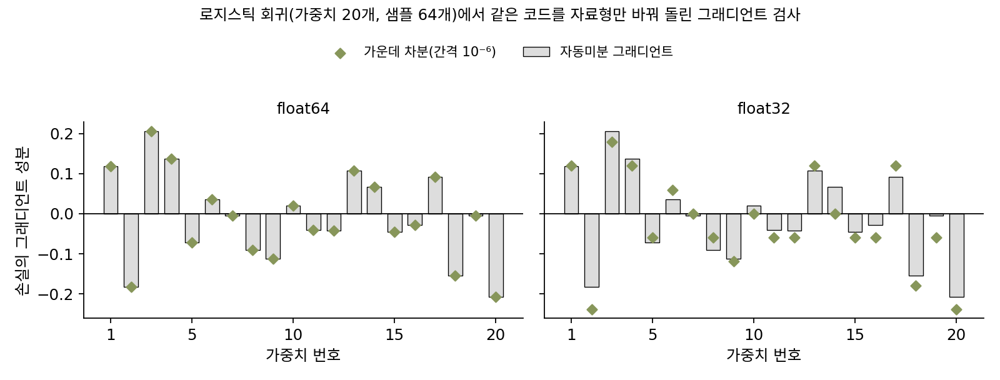

미분 없이: 0차 최적화
이 장의 물음
모델을 학습시키다 보면 그래디언트를 구할 수 없는 숫자를 줄이거나 키워야 할 때가 있다. 학습률과 드롭아웃 비율을 바꿔 가며 검증 정확도를 재는 일이 그런데, 학습 한 번에 한 시간이 걸리고 그 결과로 정확도라는 숫자 하나가 나온다. 정확도를 학습률로 미분하려면 한 시간 동안 일어난 학습 전체를 미분해야 하고, 정확도는 맞힌 개수를 센 값이라 매끄럽지도 않다. 회사의 시뮬레이터나 바깥 서비스가 값만 돌려주는 경우도 있는데, 이때는 설정을 넣으면 점수가 나오지만 안의 식은 볼 수 없다.
이런 상자 앞에서 할 수 있는 일은 값을 넣고 결과를 읽는 것뿐인데, 그래도 값이 가장 낮은 곳을 찾아 내려갈 수 있을까? 이 장은 다음 물음에 차례로 답한다.
- 값만 알려 주는 상자에서 그래디언트를 추정하려면 두 점에서 재서 차이를 보면 될 것 같다. 두 점 사이를 얼마나 가깝게 잡아야 할까? 가까울수록 좋을까?
- 그래디언트를 아예 추정하지 않고, 값을 비교만 하면서 내려갈 수는 없을까? 하이퍼파라미터를 고를 때 격자로 빠짐없이 시험하는 것과 아무렇게나 뽑아 시험하는 것 가운데 어느 쪽이 나을까?
- 파라미터가 백만 개면 하나씩 흔들어 재는 데만 함숫값 계산이 백만 번 넘게 든다. 몇 번만 재고도 내려갈 방향을 얻을 수 있을까? 그 대가는 무엇일까?
- 정확도처럼 계단 모양이라 미분이 거의 어디서나 0인 목표, 작은 골짜기가 가득한 목표는 어떻게 내려갈까?
- 신경망 한가운데에서 토큰이나 볼 자리를 확률로 하나 뽑으면 그 자리에서 미분이 끊긴다. 그 한 자리 때문에 신경망 전체를 값만으로 다뤄야 할까?
- 정규분포에서 뽑을 때는 노이즈를 바깥으로 빼서 뽑기를 거쳐 미분할 수 있었다. 몇 칸 가운데 한 칸을 고르는 뽑기도 그렇게 매끄러운 계산으로 바꿀 수 있을까? 바꾸면 무엇을 잃을까?
유한 차분: 두 번 재서 그래디언트 추정하기
값만 돌려주는 상자 앞에서 가장 먼저 떠오르는 방법은 고등학교에서 배운 미분의 정의다. 미분 f′(x)는 (f(x + h) − f(x))/h 에서 h 를 0으로 보낸 극한이었다. 컴퓨터는 극한을 계산할 수 없으니 h 를 아주 작은 수로 두고 두 번 재서 나누면 될 것 같은데, 그렇다면 h 는 얼마로 잡아야 할까? 작을수록 극한에 가까우니 컴퓨터가 다룰 수 있는 가장 작은 수를 고르면 될까?
역사: 키퍼와 울포위츠가 노이즈 속에서 꼭대기를 찾다
간격을 얼마로 잡을지라는 물음이 처음 진지하게 다뤄진 곳은 값에 노이즈가 섞이는 실험이었다. 1951년 허버트 로빈스(Herbert Robbins)와 서튼 먼로(Sutton Monro)는 노이즈 섞인 관측만으로 방정식의 근을 찾아가는 방법을 냈다. 이듬해인 1952년, 잭 키퍼(Jack Kiefer)와 제이컵 울포위츠(Jacob Wolfowitz)는 『수리통계 연보(Annals of Mathematical Statistics)』에 다섯 쪽짜리 논문을 실었다. 제목은 「회귀 함수의 최댓값을 확률적으로 추정하기(Stochastic Estimation of the Maximum of a Regression Function)」였다. 그들이 풀려던 문제는 설정값을 바꿔 가며 반응을 잴 수 있는데, 잴 때마다 노이즈가 섞이고 반응의 식은 모르는 상황에서 반응이 가장 큰 설정값을 찾는 것이었다.
꼭대기에서는 그래디언트가 0이지만, 그 그래디언트를 직접 잴 수는 없다. 키퍼와 울포위츠는 지금 자리 xₙ 의 양쪽 xₙ − cₙ 과 xₙ + cₙ 에서 한 번씩 재고, 두 값의 차이를 2cₙ 으로 나눈 것을 그래디언트 대신 썼다. 그 추정한 그래디언트 쪽으로 aₙ 만큼 옮기고 단계마다 cₙ 과 aₙ 을 줄여 가는데, 여기서 고민이 생긴다. 간격 cₙ 을 크게 두면 두 점 사이에서 곡선이 휘는 것까지 그래디언트에 섞이고, 작게 두면 노이즈를 아주 작은 cₙ 으로 나누게 되어 추정값이 마구 흔들린다. 그들은 cₙ 이 0으로 가되 너무 빨리 가지는 않도록 cₙ 과 aₙ 이 함께 지켜야 할 조건을 붙여, 이 방법이 꼭대기로 다가간다는 것을 보였다. 2년 뒤 줄리어스 블럼(Julius Blum)이 이 방법을 변수가 여럿인 경우로 넓혔다.

뒤에서 보겠지만 노이즈가 없어도 같은 고민이 남는데, 컴퓨터가 계산한 함숫값에도 작은 오차가 섞여 있기 때문이다.

간격 cₙ 이 문제라면 지금처럼 여러 값을 넣어 보고 오차가 가장 작은 걸 고르면 되지 않아요?

오차가 가장 작은 걸 고르려면 오차를 재야 하죠. 오차를 재려면 무엇을 알아야 해요?

참 그래디언트요. 그런데 반응의 식을 몰랐으니까… 견줄 기준부터 없네요.

게다가 같은 설정에서 두 번 재도 값이 달랐어요. 간격 하나가 괜찮은지 보려 해도 여러 번 재야 하는데, 그 한 번 한 번이 실험이에요.

그래서 간격을 줄여 가는 규칙을 미리 정해 두고, 그 규칙이 어떤 조건을 지키면 꼭대기로 간다는 걸 증명으로 보인 거네요. 실험을 다 돌려 보고 고르는 대신에요.
곡선이 얼마나 휘었는지도, 노이즈가 얼마나 큰지도 모르는 채로 통해야 하는 규칙이었어요.

그럼 컴퓨터로 계산한 함숫값에서는요? 같은 x 에 늘 같은 값이 나오니까 노이즈가 없잖아요. 그때는 간격이 작을수록 좋을 것 같은데, 거기서도 같은 고민이 남아요?
값만 돌려주는 상자 하나
간격을 줄일 때 무슨 일이 생기는지 보려면, 답을 미리 아는 상자에서 시작하는 것이 좋다. 상자는 숫자 x 를 넣으면 f(x) 를 돌려준다. 안의 식은 f(x) = sin 3x + x² 이지만 상자를 쓰는 사람은 모른다고 하자. 우리는 식을 알고 있으므로 참 그래디언트 f′(0.5) = 3 cos 1.5 + 1 = 1.212212 를 미리 계산해 두고, 추정값이 얼마나 틀리는지 잴 수 있다. x = 0.5 에서 간격 h 를 열 배씩 줄여 가며 (f(0.5 + h) − f(0.5))/h 를 float64(64비트 실수)로 계산하면 다음과 같다.
| 간격 h | 추정값 | 오차 |추정값 − f′(0.5)| |
|---|---|---|
| 10⁻¹ | 0.8635264427 | 3.5 × 10⁻¹ |
| 10⁻³ | 1.2087225626 | 3.5 × 10⁻³ |
| 10⁻⁵ | 1.2121767177 | 3.5 × 10⁻⁵ |
| 10⁻⁷ | 1.2122112558 | 3.5 × 10⁻⁷ |
| 10⁻⁸ | 1.2122115756 | 2.9 × 10⁻⁸ |
| 10⁻⁹ | 1.2122114423 | 1.6 × 10⁻⁷ |
| 10⁻¹¹ | 1.2121859072 | 2.6 × 10⁻⁵ |
| 10⁻¹³ | 1.2123635429 | 1.5 × 10⁻⁴ |
| 10⁻¹⁵ | 1.1102230246 | 1.0 × 10⁻¹ |
h 를 10분의 1로 줄이면 10⁻⁸ 까지는 오차도 10분의 1로 준다. 그 뒤로는 거꾸로 간격을 줄일수록 오차가 커지고, 10⁻¹⁵ 에서는 처음 10⁻¹ 과 비슷하게 틀린다. 오차를 만드는 원인이 둘이고, 둘이 반대 방향으로 움직이기 때문이다.
첫째 원인은 곡선이 휘었다는 것이다. 테일러 전개로 f(x + h) = f(x) + f′(x)h + ½f″(x)h² + … 이므로, 차이를 h 로 나누면 f′(x) 에 ½f″(x)h 가 더 붙는다. 이 상자에서 f″(0.5) = −6.98 이니 오차는 대략 3.49h 이고, 표의 10⁻¹ 부터 10⁻⁷ 까지가 이 근사식 3.49h 와 맞는다. 둘째 원인은 컴퓨터가 수를 유효 숫자 열여섯 자리쯤으로만 적는다는 것이다. f(0.5) = 1.247495 같은 값은 마지막 자리에서 반올림되어 많게는 δ ≈ 1.25 × 2.2 × 10⁻¹⁶ = 2.8 × 10⁻¹⁶ 쯤 틀린다. 거의 같은 두 값을 빼면 앞자리는 지워지고 이 반올림 오차는 남는데, 그것을 아주 작은 h 로 나누니 커진다. 두 원인을 더하면 오차의 크기는 대략 다음과 같다.
첫째 항은 h 에 비례해 늘고 둘째 항은 h 에 반비례해 는다. 두 항의 합이 가장 작은 곳은 두 항이 같아지는 h* = 2√(δ/|f″|) ≈ 1.3 × 10⁻⁸ 근처다. 표에서 10⁻⁸ 이 가장 좋았던 것이 이 때문이다(실제 오차는 반올림 오차가 서로 일부 지워져 이 상한보다 조금 작다). 이렇게 극한을 취하지 않고 간격을 유한하게 둔 채 함숫값의 차이로 미분을 근사하는 것을 유한 차분 (간격을 남겨 둔 미분 근사 / finite difference)이라 한다. 위처럼 오른쪽 한 점만 쓰는 꼴을 전진 차분이라 부른다. 간격은 작을수록 좋은 것이 아니고, 곡선이 휜 정도와 함숫값의 정밀도가 함께 정하는 가장 좋은 크기가 있다. 손으로 미분 계산을 하는 수치해석 책들이 「간격은 기계 정밀도의 제곱근쯤」이라고 권하는 것도 이 계산에서 나온 말이다.

변수가 d 개면 변수마다 한 번씩 흔들어야 하므로, 그래디언트 하나를 추정하는 데 함숫값 계산이 d + 1 번 든다. 변수가 셋이면 네 번이지만 백만 개면 백만한 번이다.
ML에서: 그래디언트 검사
신경망은 역전파(그래디언트를 한 번의 거꾸로 계산으로 정확히 얻는 방법)로 그래디언트를 구하므로 유한 차분을 학습에 쓰지는 않는다. 대신 역전파 코드가 맞는지 확인할 때 쓴다. 새 층을 직접 짜서 그래디언트 계산을 손으로 적었다면, 같은 손실을 유한 차분으로 미분한 값과 비교해 둘이 맞는지 본다. 이렇게 두 그래디언트를 맞대 보는 일을 그래디언트 검사(gradient check)라 하고, 파이토치에는 torch.autograd.gradcheck 가 있다. 이 함수의 기본값은 간격 eps=1e-06 이고, 입력의 칸마다 앞뒤로 한 번씩 흔들어 손실을 다시 계산한다.
이렇게 함숫값만 써서 최적화하거나 그래디언트를 추정하는 방법을 묶어 0차 최적화라 부른다. 0차는 미분을 한 번도 쓰지 않는다는 뜻이다. 그래디언트(1차 미분)를 쓰는 경사하강은 1차 방법, 2차 미분까지 쓰는 뉴턴법은 2차 방법이다.
문제 1. GPS 로 잰 속도
차가 일정하게 가속(초속 2 m/s 씩 빨라짐)하며 달리고 있고, 10초째의 참 속도는 20 m/s 다. 속도계 대신 GPS 를 쓰는데, GPS 가 알려 주는 위치는 잴 때마다 많게는 3 m 틀린다. 10초째 위치와 그로부터 Δt 초 뒤 위치를 읽어 (뒤 위치 − 앞 위치)/Δt 로 속도를 잰다. (가) Δt = 0.1초, 1초, 10초일 때 속도가 많게는 얼마나 틀릴 수 있는가? (나) 가장 좋은 Δt 는 몇 초이고, 그때 오차는 많게는 얼마인가?

순간 속도니까 간격이 짧을수록 좋죠. 0.1초면 그동안 속도가 0.2 m/s 밖에 안 바뀌니까 거의 정확할 거예요.
0.1초 동안 차는 2 m 쯤 가요. 그런데 GPS 위치는 많게는 몇 m 틀린다고 했죠?
3 m 요. 아, 앞 위치가 3 m 앞으로, 뒤 위치가 3 m 뒤로 틀리면 차이가 6 m 나 어긋나요. 그걸 0.1초로 나누면 60 m/s 가 틀려요. 참 속도보다 오차가 세 배나 크네요.
그럼 간격을 늘리면 되나? 아, 그러면 반대 문제가 생기겠다. 그동안 가속하니까 (뒤 위치 − 앞 위치)/Δt 는 그 사이 평균 속도, 곧 20 + 2 × Δt/2 이야.
그럼 오차가 두 군데서 오는 거네.
응. 가속 탓 오차가 Δt 이고, 위치 오차 탓이 6/Δt 야. 1초면 1 + 6 = 7 m/s, 10초면 10 + 0.6 = 10.6 m/s 까지 틀릴 수 있어.
두 오차의 합이 가장 작은 Δt 는요?

Δt + 6/Δt 가 가장 작으려면 두 항이 같아야 하니까 Δt = √6 = 2.45초예요. 그때 많게는 4.90 m/s 틀려요. 하나는 간격에 비례하고 하나는 반비례하니까 가운데에 바닥이 있는 U 자네요.

실험 보고서에서 시간 간격을 무조건 짧게 잡았다가 숫자가 들쭉날쭉해서 조교님한테 지적받은 적이 있는데, 그때 6/Δt 를 키우고 있었던 거네요.
문제 2. 양쪽에서 재면
같은 상자 f(x) = sin 3x + x² 를 x = 0.5 에서 가운데 차분 (f(x + h) − f(x − h))/(2h) 로 미분한다. (가) 간격을 10분의 1로 줄이면 자름 오차는 몇 분의 1로 주는가? (나) float64 에서 가장 좋은 간격은 대략 얼마이고, 그때 오차는 전진 차분의 가장 좋은 오차와 비교해 어떤가? (풀어 본 뒤 위젯 1의 「문제 2 불러오기」로 확인해 보자.)

가장 좋은 간격은 전진 차분과 같이 10⁻⁸ 이겠죠. 반올림 오차는 그대로니까요. 계산해 보면 10⁻⁸ 에서 오차가 3.9 × 10⁻⁹ 이에요. 전진 차분보다 조금 나아요.
10⁻⁵ 에서도 계산해 볼래요?

10⁻⁵ 에서는 4.1 × 10⁻¹¹ 이에요. 간격이 천 배나 큰데 오차는 백 배 작아요. 이상한데요?
자름 오차가 전진 차분이랑 다르게 줄어드나 봐. 테일러 전개를 양쪽에 써 볼게. f(x + h) − f(x − h) 에서 짝수 차 항은 지워지고 2f′h + f‴h³/3 + … 이 남네.
2h 로 나누면 자름 오차는요?
|f‴|h²/6 이에요. 간격을 10분의 1로 줄이면 오차가 100분의 1로 줄어요.
표에서도 10⁻¹, 10⁻², 10⁻³ 에서 3.2 × 10⁻³, 3.2 × 10⁻⁵, 3.2 × 10⁻⁷ 이야. 정말 백 배씩 줄어.
자름 오차가 h² 에 비례하고 반올림 오차는 여전히 1/h 에 비례하면, 둘이 같아지는 간격은 어떻게 바뀔까요?
h² 과 δ/h 를 맞추면… h 가 δ 의 세제곱근쯤이에요. 이 상자로 계산하면 (3δ/|f‴|)^(1/3) = 7.6 × 10⁻⁶ 이고요.
촘촘히 재 보니까 5.3 × 10⁻⁶ 에서 오차가 7 × 10⁻¹⁴ 로 가장 작아. 전진 차분의 가장 좋은 오차 4 × 10⁻⁹ 보다 6만 배쯤 작은데?
간격은 전진 차분의 10⁻⁸ 보다 오히려 큰데, 왜 오차가 더 작아졌을까요?

자름 오차가 빨리 줄어드니까 간격을 덜 줄여도 되고, 그만큼 반올림 오차도 덜 커지는 거예요.

함숫값을 한 번 더 쓸 값어치가 있네요. 그래서 그래디언트 검사 함수도 앞뒤로 한 번씩 재는 거였구나.
위젯 1에서 문제 2 설정을 불러와 가운데 차분의 오차 곡선이 어디서 가장 낮아지는지 전진 차분과 견주어 보세요.

문제 3. float32 로 한 그래디언트 검사
가중치 20개짜리 로지스틱 회귀(샘플 64개)의 손실을 가운데 차분(간격 10⁻⁶)으로 미분해 자동미분 그래디언트와 견준다. float64 로 하면 가장 큰 차이가 1.85 × 10⁻¹⁰ 이고, 같은 계산을 float32 로 하면 6.74 × 10⁻² 로 그래디언트 크기의 32% 나 어긋난다. (가) float32 의 그래디언트 계산 코드가 틀린 것인가? (나) float32 에서 검사하려면 간격을 얼마쯤으로 잡아야 하는가? (다) 파라미터가 백만 개이고 손실 한 번 계산에 10밀리초가 들면 이 검사에 얼마나 걸리는가?

float32 자동미분이 틀린 거 아닐까요? gradcheck 를 돌려도 float32 에서는 실패라고 나와요.
float64 에서는 10⁻¹⁰ 까지 맞았어요. 같은 코드가 자료형만 바꿨다고 틀릴까요? 의심할 쪽이 하나 더 있죠?
차분 쪽이요. 반올림 오차 δ/h 를 대략 계산해 볼게요. float32 는 유효 숫자가 일곱 자리쯤이라 손실 1.07 의 반올림 오차가 10⁻⁷ 쯤이고…
그걸 간격 10⁻⁶ 으로 나누면 0.1 이네.
어긋난 크기 0.067 과 자릿수가 같아. 틀린 건 자동미분이 아니라 차분이야.

그래요. 파이토치 문서에도 gradcheck 의 기본값은 float64 입력에 맞춰 정했고, 정밀도가 낮은 입력에서는 실패하기 쉽다고 적혀 있어요. 그럼 float32 에서는 간격을 어떻게 잡죠?
가운데 차분이니까 δ 의 세제곱근쯤이요. (10⁻⁷)^(1/3) 이면 5 × 10⁻³ 정도예요. 실제로 간격을 바꿔 보면 10⁻⁴ 에서 상대 차이 4.4 × 10⁻³, 10⁻³ 에서 4.0 × 10⁻⁴, 10⁻² 에서 3.0 × 10⁻⁵ 로 가장 작고, 10⁻¹ 에서는 8.2 × 10⁻⁴ 로 다시 커져요.
문제 2(양쪽에서 재면)랑 같은 U 자네요. 바닥이 float64 의 10⁻⁵ 쯤에서 float32 의 10⁻² 쯤으로 옮겨 갔을 뿐이고요. (다)는 칸마다 두 번이니 200만 번이고, 10밀리초씩이면 2만 초, 5.6시간이에요. 역전파는 손실 계산 몇 번 값이면 끝나는데요.

그래서 검사는 가중치 몇 개짜리 작은 모델로 하는 거구나. 큰 모델에서 매번 이렇게 그래디언트를 구하는 건 말이 안 되고.